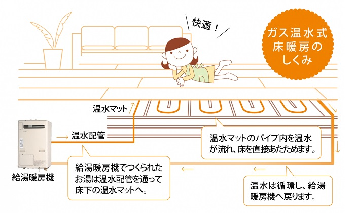

①扱う部品、製品について

製品の主な使用用途
弊社で扱う製品は主に床暖房のパネルに組み込まれるヘッダーと呼ばれる部品になります。
床暖房というのは、フローリング等の床の下に樹脂パイプを這わせ、その中にお湯を流す事で床が温まるという仕組みです。
このパイプを這わせる為に「床暖パネル」という物があり、このパネルで使用される部品（床暖ヘッダー）を主に扱っていただきます。
製品の各部名称
ヘッダーの各部名称です
①ジョイント部（温水が流れる樹脂パイプを接続する部分になります）
※ジョイントにもサイズがあり５Ａ、６Ａ、７Ａと数字と共に太さが変わります。
②ヘッダー本体（①のジョイントと、この本体をロウ付けして完成品にします
製品の使用用途
給湯暖房機（熱源機）からは大きなパイプを通ってお湯が流れていますが、床下に大きいパイプをそのまま這わせる事は出来ません。
その為、床暖ヘッダーはこの大きいパイプから床暖用の小さいパイプへ変換する役目を担っています。
家庭用コンセントのタコ足配線をイメージすると良いかもしれません。
②ロウ付けについて
ロウ付けとは
弊社でのロウ付け作業とは「ジョイント（タケノコ）」と「ヘッダー本体」を組み合わせて「床暖ヘッダー」を作る作業です。
ロウ付けは基本的には溶接の一種になりますが、溶接との違いは金属そのものを溶かすのではなく、
"ロウ材"と呼ばれる材料を使用し金属同士を接合する作業です。
具体的には部材と部材を接合させたい部分にロウ材を組み合わせ、そのロウ材を熱により溶かして部材を接合させます。
※ロウ材を普段の生活の中で使う物に例えれば、ボンドや接着剤（アロンアルファ等）の様な物になると思います。
どちらかと言うと溶接よりはハンダ付けに近く、高温で行うハンダ付け、
のようなイメージです。
フラックスについて
またロウ付けで部材を接合するのにもう一つ必要不可欠な物があり、
"フラックス"と言われるものです。
金属と金属を接合するには、接合部分がキレイな状態でないと上手く接合してくれません。
その為、金属と金属の接合部分をキレイにする必要があり、その為にフラックスという物を使用します。
※フラックスはハンダ付けなどでも使用する為、ハンダ付けをやった事がある人でしたら理解しやすいかもしれません。
ロウ付け温度（注意事項）
ロウ付けを行うには接合部分を高温で熱してロウ材を溶かさなければなりません、 その為ロウ付け後の製品自体がとても高温になっておりますので、 素手で直接触れる事は絶対に無いように、 十分注意して作業を行ってください。